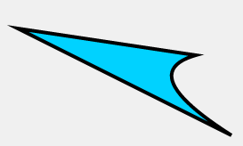
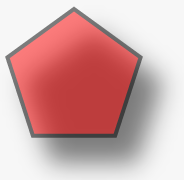

Whats Konva?
Konva is an HTML5 Canvas JavaScript framework that extends the 2d context
by enabling canvas interactivity for desktop and mobile applications.
Konva enables high performance animations, transitions, node nesting, layering, filtering,
caching, event handling for desktop and mobile applications, and much more.
How does it work?
Every thing starts from Konva.Stage than contains several users layers (Konva.Layer).
Each layer has two <canvas> renderers: a scene renderer and a hit graph renderer.
The scene renderer is what you can see, and the hit graph renderer is a special hidden
canvas thats used for high performance event detection.
Each layer can contain shapes, groups of shapes, or groups of other groups.
The stage, layers, groups, and shapes are virtual nodes, similar to DOM nodes in an HTML page.
Heres an example Node hierarchy:
Stage | +------+------+ | | Layer Layer | | +-----+-----+ Shape | | Group Group | | + +---+---+ | | | Shape Group Shape | + | Shape |
All nodes can be styled and transformed. Although Konva has prebuilt shapes available,
such as rectangles, circles, images, sprites, text, lines, polygons, regular polygons, paths, stars, etc.,
you can also create custom shapes by instantiating the Shape class and creating a draw function.
Once you have a stage set up with layers and shapes,
you can bind event listeners, transform nodes, run animations,
apply filters, and much more.
Minimal code example:
// first we need to create a stage var stage = new Konva.Stage({ container: 'container', // id of container <div> width: 500, height: 500 }); // then create layer var layer = new Konva.Layer(); // create our shape var circle = new Konva.Circle({ x: stage.getWidth() / 2, y: stage.getHeight() / 2, radius: 70, fill: 'red', stroke: 'black', strokeWidth: 4 }); // add the shape to the layer layer.add(circle); // add the layer to the stage stage.add(layer); |
Result:
Basic shapes
Konva.js supports shapes: Rect, Ellipse, Line
Image, Text, TextPath, Star, Label, SVG Path, RegularPolygon.
Also you can create custom shape:
var triangle = new Konva.Shape({ sceneFunc: function(context) { context.beginPath(); context.moveTo(20, 50); context.lineTo(220, 80); context.quadraticCurveTo(150, 100, 260, 170); context.closePath(); // special Konva.js method context.fillStrokeShape(this); }, fill: '#00D2FF', stroke: 'black', strokeWidth: 4 }); |

Styles
Each shape supports the following style properties:
- Fill. Solid color, gradients or images
- Stroke (color, width)
- Shadow (color, offset, opacity, blur)
- Opacity
var pentagon = new Konva.RegularPolygon({ x: stage.getWidth() / 2, y: stage.getHeight() / 2, sides: 5, radius: 70, fill: 'red', stroke: 'black', strokeWidth: 4, shadowOffsetX : 20, shadowOffsetY : 25, shadowBlur : 40, opacity : 0.5 }); |

Events
With Konva you can easily listen to user input events (click, dblclick, mouseover, tap, dbltap, touchstart etc),
attributes change events (scaleXChange, fillChange) and drag&drop events (dragstart, dragmove, dragend).
circle.on('mouseout touchend', function() { console.log('user input'); }); circle.on('xChange', function() { console.log('position change'); }); circle.on('dragend', function() { console.log('drag stopped'); }); |
See working example.
DRAG AND DROP
Konva has builtin drag support. For the current moment there is no drop events (drop, dragenter, dragleave, dragover)
but it is very easy to implement them via framework.
To enable drag&drop just set property draggable = true.
shape.draggable('true'); |
Then you can subscribe to drag&drop events and setup moving limits.
Filters
Konva has several filters: blur, invert, noise etc. For all available filters see Filters API.
Example:
Animation
You can create animations in two ways:
via
Konva.AnimationDemo:var anim = new Konva.Animation(function(frame) { var time = frame.time, timeDiff = frame.timeDiff, frameRate = frame.frameRate; // update stuff }, layer); anim.start();
via
Konva.TweenDemo:var tween = new Konva.Tween({ node: rect, duration: 1, x: 140, rotation: Math.PI * 2, opacity: 1, strokeWidth: 6 }); tween.play(); // or new shorter method: circle.to({ duration : 1, fill : 'green' });
Selectors
It is very useful to use searching in elements when you are building large application.Konva helps you to find an element with selectors. You can use find() method (returns collection) or findOne() method (return first element of collection).var circle = new Konva.Circle({
radius: 10,
fill: 'red',
id : 'face',
name : 'red circle'
});
layer.add(circle);
// then try to search
// find by type
layer.find('Circle'); // all circles
// find by id
layer.findOne('#face');
// find by name (like css class)
layer.find('.red')
Serialisation and Deserialization
All created objects you can save as JSON. You may save it to server or local storage.var json = stage.toJSON();
Also you can restore objects from JSON:var json = '{"attrs":{"width":578,"height":200},"className":"Stage","children":[{"attrs":{},"className":"Layer","children":[{"attrs":{"x":100,"y":100,"sides":6,"radius":70,"fill":"red","stroke":"black","strokeWidth":4},"className":"RegularPolygon"}]}]}';
var stage = Konva.Node.create(json, 'container');
Performance
Konva has a lot of tools to improve speed of your app. Most important methods:
- Caching allows you to draw an element into buffer canvas. Then draw element from the canvas. It may improve performance a lot for complex nodes such as text or shapes with shadow and strokes.
shape.cache();
- Layering. As framework supports several
<canvas>elements you can put objects at your discretion.
For example your application consists from complex background and several moving shapes. You can use one layer for background and another one for shapes.
While updating shapes you dont need to update background canvas. Demo
You can find all available performance tips here:
http://konvajs.github.io/docs/performance/All_Performance_Tips.html